Animated Textures (via Live2D Cubism textures)
Animaze supports more uses for animated textures created using Live2D Cubism technology for hybrid avatars. In addition to Animated Diffuse Maps (that were possible before) you can now also have:
-
Animated Normal Maps
-
Animated Emissive Maps
As a teaching resource for creating these kinds of assets, here are the links to all the source data for Avatar Lily. These include:
- LINK TO FBX source files for the 3D part of the model
- LINK TO Texture sources in uncompressed format
- LINK TO Cubism Project (Sources, loadable in Cubism) for the Animated Textures
- LINK TO Cubism Runtime files for the Animated Textures
Animated Textures (via Live2D Cubism textures)
The Live2D (Cubism) animated textures details are alpha-blended on top of the existing static textures, and the result of this blend is what is used on the model. Having a correct (static) texture as a base is still important!
The animated textures, if used for Normal Maps, are used for dynamically enhancing the details on the avatar's normals. It’s a great way to accentuate the avatar’s expressivity without increasing the polycount
These animated textures for normal maps built with Live2D (Cubism) assets work in synergy with the tracked animation inputs of the avatar. It's important that the Live2D (Cubism) assets that are used for animated textures have their parameters named correctly for the behavior you want to obtain. For example, a general use-case is the BrowUP/Down animations for 3D, and for 2D ParamBrowLY, ParamBrowRY animations - surprise & frowning.
-
if ParamBrowLY si ParamBrowRY are 0, then the opacity will be set to 0 >> default position
-
if ParamBrowLY si ParamBrowRY are -1 or 1, then enables frown (-1) & eyebrow up (1)
Below we will exemplify the general steps to create the source data for such a Live2D (Cubism) animated texture, and how to map it on your avatar as an animated normal map.
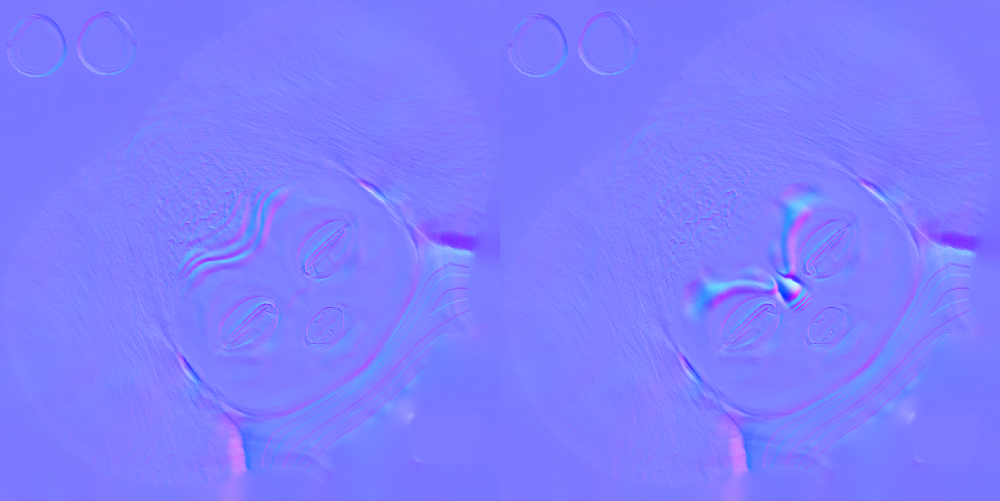
Animated Normal Maps Steps
Steps to create the source data for the Live2D powered animated normals:
For each individual parameter that you want to drive changes on the normal, you need to follow the following steps. We’ll use Eyebrow UP/Down as an example.
-
in the software you work with to create the geometry for your hybrid avatar (Maya, Blender etc), activate the eyebrow up animation, duplicate the mesh and export it
-
on this new mesh, create high-poly eyebrows wrinkles, bake it, and export it
-
Repeat steps 1 and 2 for eyebrows down.
-
Separately, in the Live2D Cubism editor, create a new project add these two edited baked normals on different layers – stack them and set the opacity for these two layers, where:
o if ParamBrowLY and ParamBrowRY are 0 >> the opacity of these new layers will be set to 0 >> default position
o if ParamBrowLY si ParamBrowRY are -1 or 1 >> make sure that the live2D asset shows the frown wrinkles (-1) or the eyebrow up wrinkles (1), as appropriate
-
Export the model runtimes (.json file)
Steps to add the newly created Live2D Cubism runtime asset on the avatar, through Animaze Editor:
-
Select the mesh that you want to add the Animated texture normals to in the Hierarchy Panel
-
in the Editor Panel, click Add Component and select Cubism Animated Texture – Normal
-
Expand this tab, then click on the texture box and add the Live2D Cubism runtime that you have created above (the .json file you have ready.
-
If needed, set texture size by adjusting the tiling and offset for the Live2DCubism set.
-
Use the Avatar Puppeteering debugger to test your work ( how tracking inputs activate animated elements on your Live2D asset - now being used as an animated norma map.
Animated Emissive Texture
Like with Normals above, the same thing is supported for other texture maps. Let’s take the specular Texture map that also holds the emissive channel - That can be replaced with a live2D asset too. In this example, this has been linked to being triggered by a Special Action instead of a tracking input, (but it can also be linked to tracking input just like the normals above- it is up to you how what inputs you chose to animate your Live2D animated texture).
As an example is avatar Lily, for which we created a light effect, a light wave moving across the avatar’s body/ skin patterns when the “startled” Special Action is triggered. (The effect brings an emphasis on her innocent personality, amazed by her own magical potential and heritage.)
To achieve this we layered on top of static Specular Texture a Live2D (Cubism) surface. To see how we have animated the blue channel ( emissive) in Live2D Cubism see step by step process below
Steps to create it:
-
Import the static specular map on which you want to add the animated emissive in Photoshop
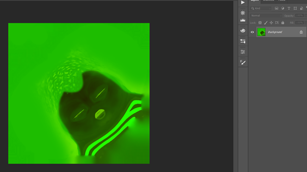
-
Create a mask to isolate the parts that don’t need to be affected by the emissive, if needed
-
Add a new layer with the form you need for your animation
o set value 0 for Red & Green channels
o set value 1 for Blue channel – full emissive
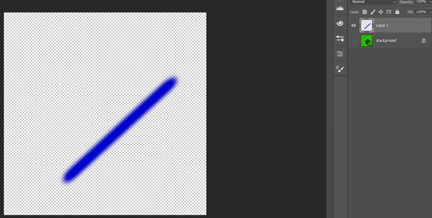
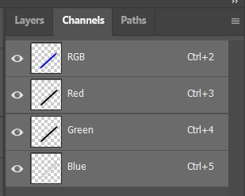
-
The final result should look like this:
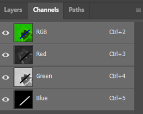
-
Import this file in Cubism Editor
-
Create a new Parameter where:
o set the movement of the layer accordingly with the emissive info in the Blue channel
-
position 0 – the stripe is outside of the animation area
-
position 1 – the stripe is within the animation area
-
Use this Parameter to create the animation in Cubism Editor
-
Export the animation as .moc3 file from the “Model” mode of the editor – Export motion
-
Import the model3.json file (automatically created in the previous step) in the Cubism Viewer, then drag and drop the scene1.model3.json (also automatically created in the previous step)
Steps to add it on the avatar, through Animaze Editor:
-
Select the mesh that you want to add the animated texture to in the Hierarchy Panel
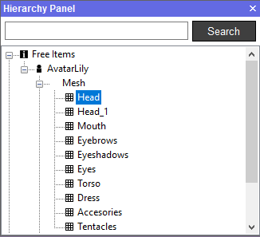
-
in the Editor Panel, click Add Component and select Cubism Animated Texture – Specular
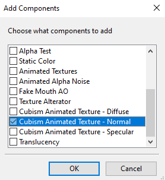
-
Expand this tab, then click on the texture box and add the .json file you have ready
Addendum :
Steps for bringing Lily to life:
1. For this avatar we tried to create a friendly personality as possible, by harmonizing the proportions, dynamic silhouette based on round shapes, emphasizes Lily’s friendly and likable personality.
The human/octopus hybrid turned out to be the most relatable approach for the ‘Octopus’ subject
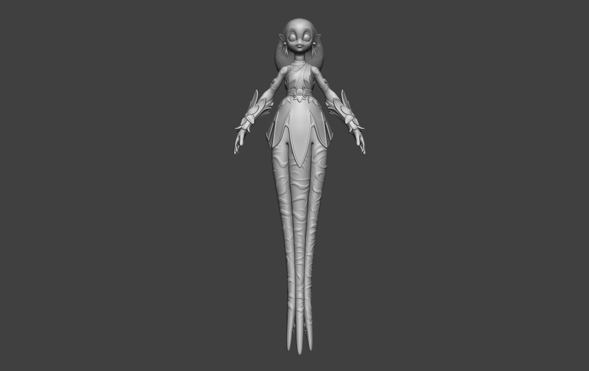
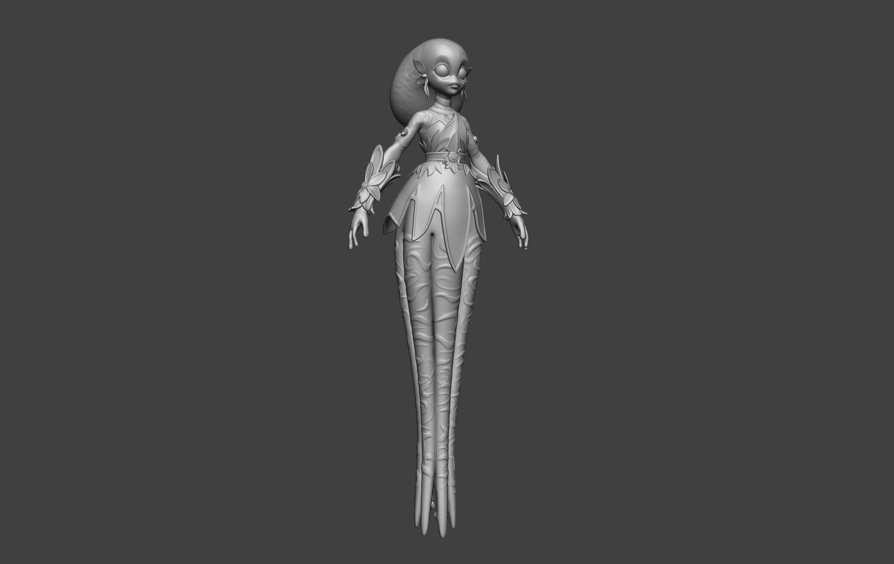
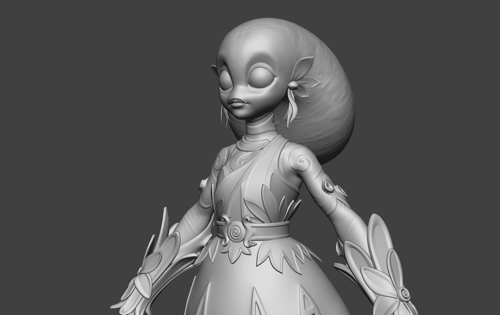
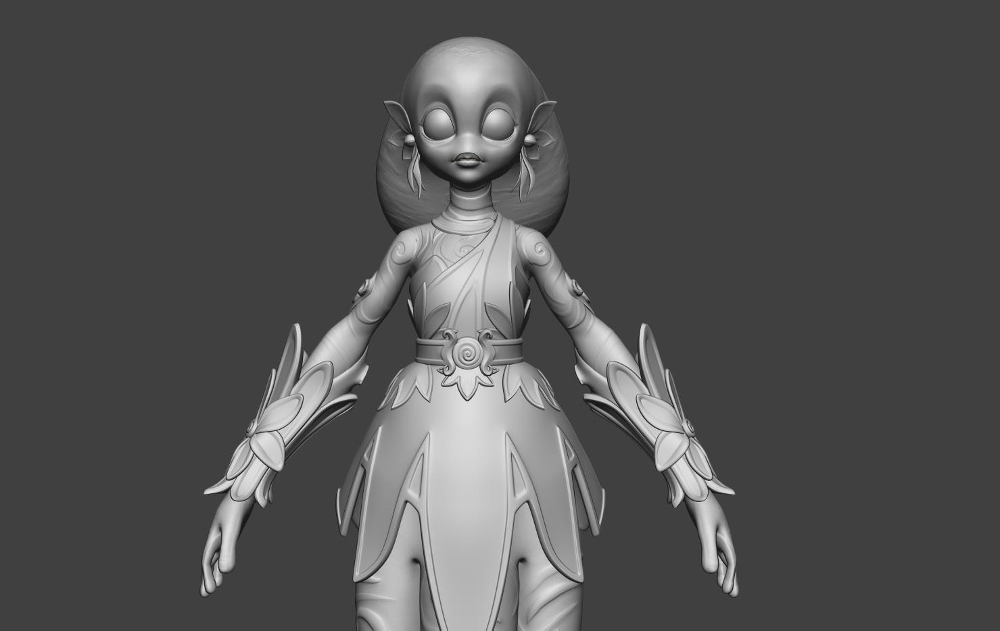
Colors are inspired by underwater flora and fauna found in the warmer, friendlier water areas of our planet.
2. We have created a big contrast between expressions, thus adding more depth to them.
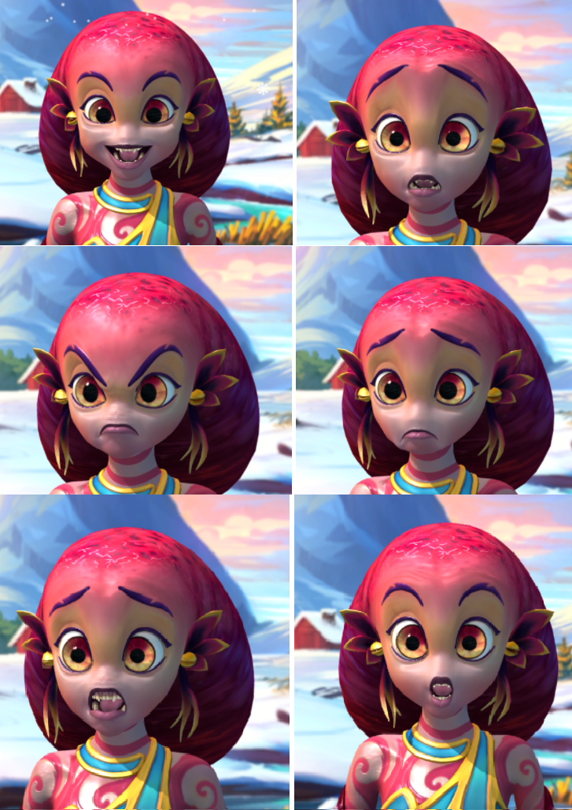
3. What is different for this avatar is the fact we add more deformations for jaw, lips, cheeks for more variation, so now you can obtain almost totally different characters.
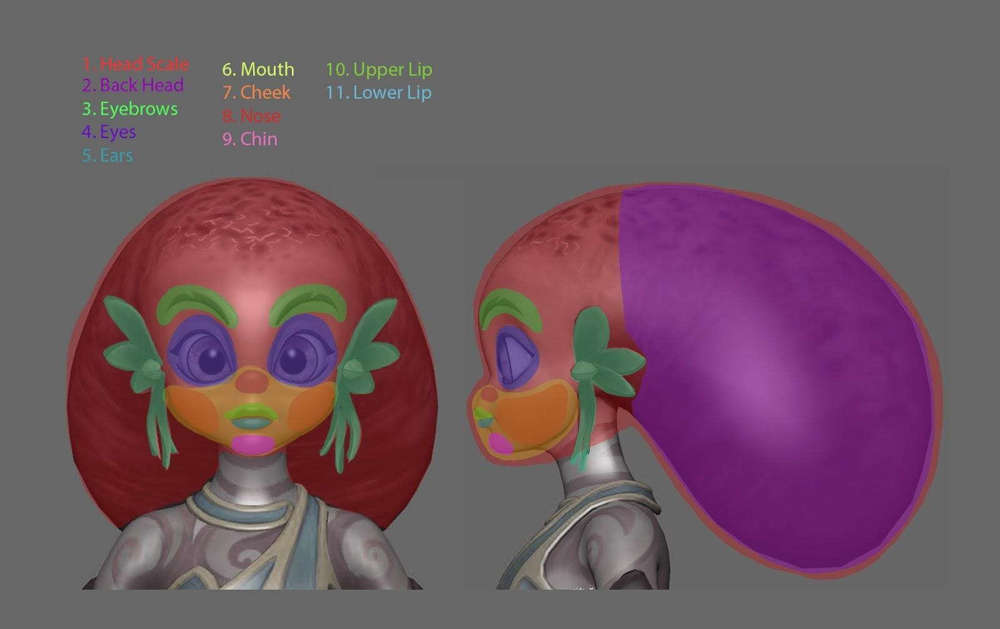
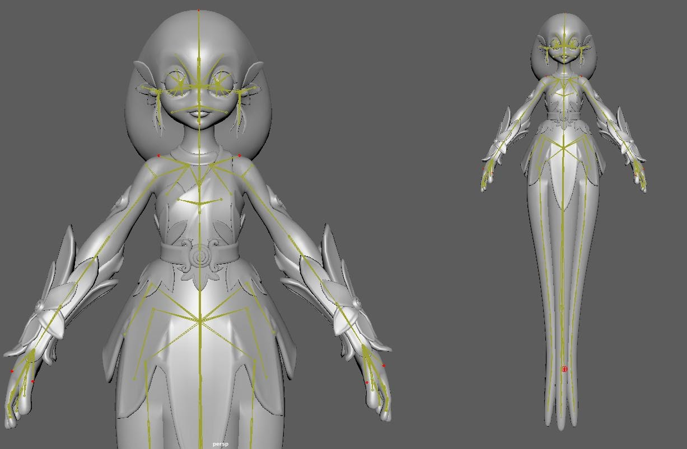